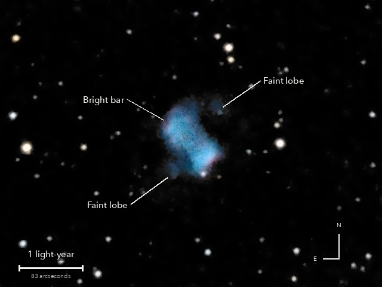

The Little Dumbbell Nebula
Messier 76, a planetary nebula in Perseus
Another dying star's cast-off layers, seen from the side: a bright bar of glowing gas with a faint lobe on either side. It was once taken for two clouds, so it has two catalogue numbers, NGC 650 and NGC 651.
What you are looking at

Swipe sideways to see the rest. Tap the picture for full size.
- Distance
- Roughly 2,500 light-years (not well known)
- This picture spans
- 6 light-years
- The light left
- Around 470 BC, when Socrates was born
- The bright part is
- About 2 light-years across
For photographers
5.5 minutes of light on one field, under a clear sky.
- Exposures
- 22 x 15 s at ISO 3200: 5.5 minutes
- Frames
- 26 taken, 22 kept. 3 dropped because the tube moved during the exposure (stars stretched 1.47 to 1.55 to 1, all the same way); 1 was taken as the mount set off for the next target. None lost to cloud
- Sampling
- 0.776 arcsec per pixel: one pixel per 2 x 2 colour cell, never enlarged. Stars 4.1 arcsec wide (half-flux)
- Field
- 8.3 x 6.2 arcmin, north up, centred on the catalogue position; every frame resampled once, straight onto this grid
- When
- 8 October 2026, late evening, over 14 minutes. 57 to 59 degrees up, no Moon
- Field rotation
- 0.9 degrees over the run, corrected in registration. The field jumped twice by 150 to 165 px as the pointing model re-centred it
- Calibration
- No darks and no flat frames were taken: hot pixels found from the run itself (21,000 to 23,000 per colour plane) and repaired
- Stacking
- RAW colour planes (no demosaic), hot pixels by 3 x 3 median, registered on stars with rotation, sigma-clipped weighted mean, one sky constant per colour per frame. Noise 4.5 times lower than one frame (4.7 expected)
- Sky
- In the picture only: the vignetting dome, about 3.5 DN across the picture, measured over the whole frame outside 4.3 arcmin of the nebula and subtracted. The stack keeps the constants alone
- Finish
- The camera's as-shot white balance, no colour matrix: the oxygen light comes out cyan-blue. Arcsinh stretch, black at the 64th percentile, gamma 0.9, S-curve 0.25, saturation x 1.1. Dark sky neutral and smoothed (median 5 px, bilateral 6 px)
- What is real
- The bar and both lobes repeat in two independent half stacks (lobes at 14 and 11 sigma), and so does the pink at the ends of the bar. The faint outer loops beyond 75 arcsec do not, so they are not shown
- Not used
- Wiener deconvolution at two strengths: smaller stars, but 1.4 to 2.2 times the sky noise and a dark ring round every star
- Telescope
- Celestron 8SE Schmidt-Cassegrain: 203 mm aperture, 2,081.4 mm focal length by plate solve of this stack, f/10.3
- Camera
- Sony a6000, stock, at prime focus: APS-C 23.5 x 15.6 mm, 6000 x 4000, 3.9 micron pixels, RAW
- Mount
- Sky-Watcher EQ6-R, unguided. Set down without leveling, 13.4 degrees off the pole; aligned from four plate-solved photos, both axes driven from that model
© 2026 Brad Gessler · Celestron 8SE (8 inch, 2,082 mm) and Sony a6000 on an EQ6-R · San Francisco Bay Area · night of 8 October 2026
Capture and mount: Observatory (Elixir on a Raspberry Pi 3). Stacking: numpy, SciPy, OpenCV, rawpy. Plate solving: astrometry.net. Stacked from the camera's RAW frames. Nothing generated.
© 2026 Brad Gessler. The pictures and the words are his own; all rights reserved.